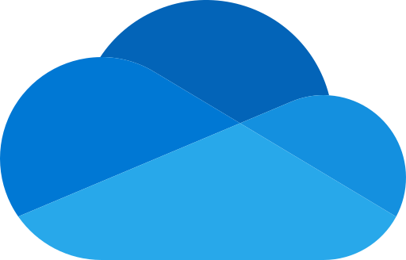
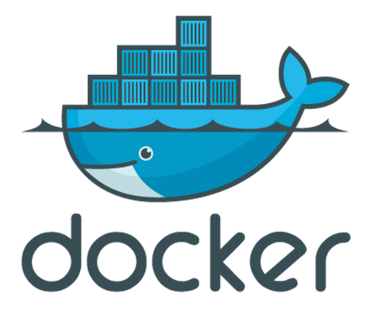
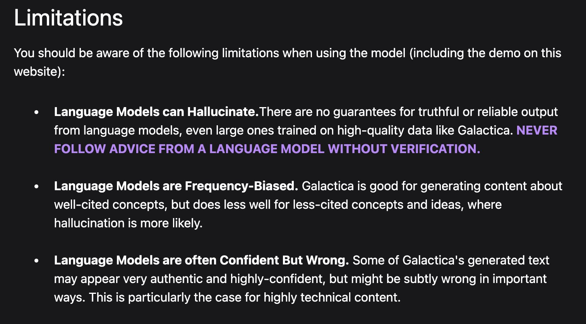

Tools of the Trade
Principles
- Software should be free (as far as practicable).
- Software should be open (as far as practicable).
- Software should run on all platforms.
- Software should reflect what you will encounter in the ‘real world’.
Tools to Make Your Life Easier
- OneDrive (or Dropbox): keep your stuff backed up in the cloud.
- Slack: get help (or just tips and tricks) from peers and staff
- Docker: virtualisation platforms to ensure you don’t ‘hose’ your computer.
- Python: how we do ‘data science’.
- GitHub: manage your code, your data, even your essays/reports.
- Markdown: focus on the right things while you write and treat your essays like code!
- Quarto: convert Markdown+Python to pretty documents/web pages.
- LLMs: assistance in sketching out code snippets/validation.
OneDrive/Dropbox

OneDrive and Dropbox are ‘cloud-based file synchronisation tools’: files placed in the special folder are automatically uploaded to servers, and automatically downloaded to any other computer on which you have set up the service. Changes are also synchronised ‘every time’ you save the file.
Why Use It?
We want you to use OneDrive and/or Dropbox for four reasons:
- You can access your files anywhere in the world via the Desktop or Web.
- You have an backup of all of your work, even if your computer has a complete meltdown.
- You have limited ‘versioning’ support, so if you accidentally overwrite an essay or file, you can recover a previous version.
- This is how we collaborate, and it’s how many businesses work as well.
We Recommend…
That you keep all files that aren’t in GitHub in your Dropbox or OneDrive folder. This applies to all your CASA MSc work but could be especially useful for ensuring that data files used as part of your group work are readily accessible!
Slack

Slack is a “messaging app for teams” that is designed to reduce email, organise conversations & topics of discussion, and pull in relevant data from a host of other services in a flexible, fully-searchable way.
Why Use It?
We want you to use Slack for four reasons:
- Moodle is clunky and formal—it works well for one-to-many communication, but not so much for ‘chat’.
- Slack offers a searchable history1—you will have access to this archive for as long as you need it.
- You (and we) can access Slack on every major OS (OSX, Windows, iOS, Android, and Windows Phone) and via a browser quickly.
- Slack is used in the ‘real world’ by everyone from Apple to PayPal and the JPL. This is how developers work.
We Recommend…
Install the Slack client on your phone and on your personal computer and start using it as the way to ask questions, share answers, and generally keep ‘up to date’ on things across the entire MSc.
Workspace: https://casa-students-2024-25.slack.com
P.S. Unless a question is personal it should normally be asked in the appropriate module channel.
Docker
Docker “makes development efficient and predictable” because it is “used through the development lifecycle for fast, easy and portable application development”.
Why Use It?
Docker is a ‘virtualisation platform’ that allows you to run a second (virtual) computer on your personal computer. We use it for four reasons:
- Easier installation than Anaconda Python and everyone has the same versions of every library.
- No spillover effects since each container is isolated.
- Easy to tidy up when you’re done or add new containers when you start something new (e.g. PostgreSQL).
- Used in the ‘real world’ by many companies (JP Morgan Chase, GSK, PayPal, Twitter, Spotify, Uber…).
We Recommend…
Using Docker because configuring a development machine is hard, this makes it simple. If a Docker image works for us then we know 1 it works for you.
Docker Desktop with either:
jreades/sds:2024-intel(Windows and Older Macs)jreades/sds:2024-silicon(Newer Macs)
Large Language Models (LLMs)

ChatGPT from OpenAI (an increasingly ‘ironic’ name) is simply the most famous of a growing number of Large Language Models that draw on information found on the web and in open texts to perform sophisticated summarisation tasks.
Why Use It?
Many programmers are starting to use LLMs as part of their coding for three reasons:
- They can help to spot bugs, redundancy, and other issues that impact the performance of large applications (i.e. feedback).
- They can provide information about different libraries and strategies the developer can use, as well as completing code begun by the developer (i.e. guidance or training).
- They can help to ‘translate’ code and design patterns between languages (i.e. re-use).
This is very much a ‘brave new world’ and we are all trying to figure it out on the fly.
Danger, Will Robinson!
Here’s what we’ve noticed about ChatGPT’s output so far:
- Over-use of flowery language (e.g. ‘intricate methodologies’, ‘exhaustive reviews’, …).
- Lack of overall structure/coherence (i.e. individual paragraphs seem reasonable but the whole doesn’t ‘work’ as a single output).
- Poor referencing, including the use of non-existent or irrelevant references (i.e. papers that don’t actually exist, or that seem superficially useful but are not relevant in practice).
- The more specific the information, the less likely it is to be correct (e.g. Who is Jon Reades? vs. What are the main areas where NLP is useful in built environment research?)
Over-Confidence in Action
Who is Jon Reades?1
Jon Reades is a Senior Lecturer in the Department of Geography at University College London (UCL). He is also the director of the MSc in Smart Cities and Urban Analytics program at UCL.
Reades’ research focuses on the intersection of cities, data, and technology, with a particular emphasis on the use of spatial data and analytics to understand urban processes and support decision-making in cities. He has published widely on topics such as spatial analysis, urban data science, and the use of smart technologies in urban planning and governance.
In addition to his academic work, Reades is actively involved in a number of professional organizations and initiatives related to urban analytics and smart cities. He is a co-founder of the Urban Dynamics Institute at UCL and has served on the editorial board of several academic journals in the fields of geography and urban studies.
Read the Fine Print

We Recommend…
LLMs like ChatGPT can help you to learn to be a better coder by providing guidance and feedback, but for many applications a competent human being will be faster and have a better grasp of the purpose of the code.
LLMs as co-authors
Using ChatGPT as your co-pilot is not the same as using ChatGPT as your co-author. In this module the latter is still considered plagiarism.
The people making the best use of LLMs are people who already know how to code or write.
Recap
- With Docker we have a way to create a coding environment that is isolated from the computer and highly portable across machines.
- With OneDrive and/or Dropbox we have a place to store, backup, and share files (size limits apply).
- With Slack we have a place to ask for/provide help.
- With LLMs we have a personal ‘tutor’ who can help us to learn more quickly and effectively.
Let’s turn to the rest in part 2: Writing Code!
Resources
- What is Python?
- Why Python?
- Programming Foundations: Fundamentals
- Python is eating the world
- What can you do with Python?
- Program-Aided Language Models
- Chain of Thought Prompting
- ChatGPT is a blurry JPEG of the Internet 1
- Why Meta’s latest large language model survived only three days online 2
- Git for Decolonisation3

Tools of the Trade • Jon Reades & Fulvio Lopane